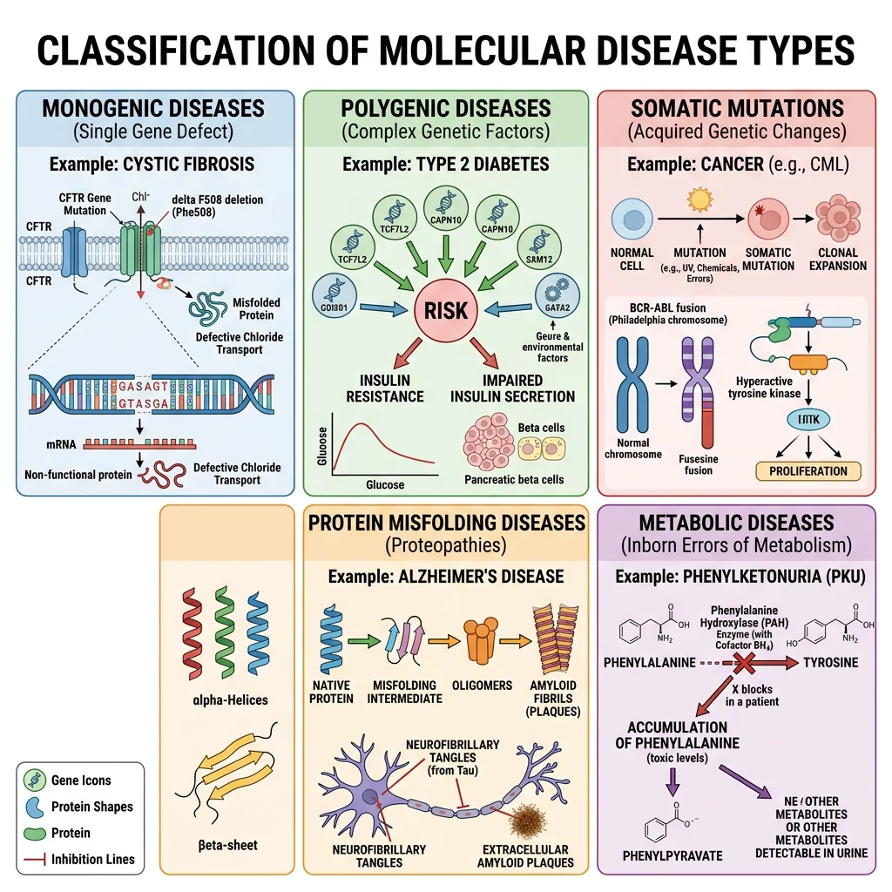
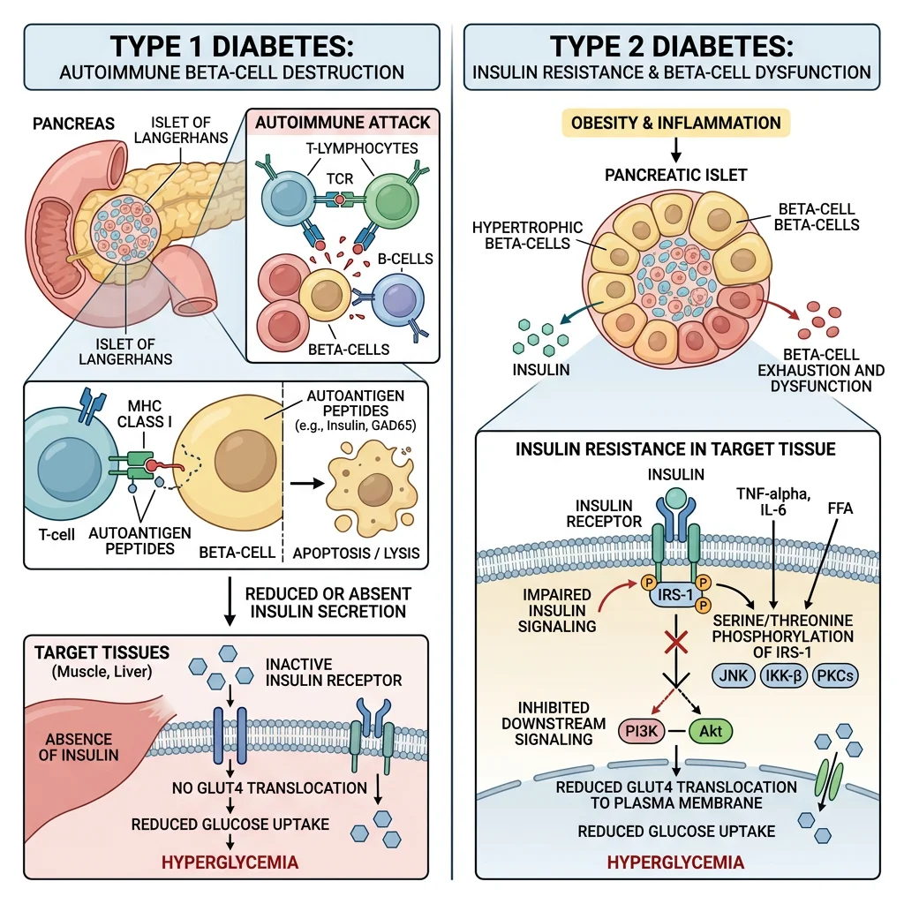
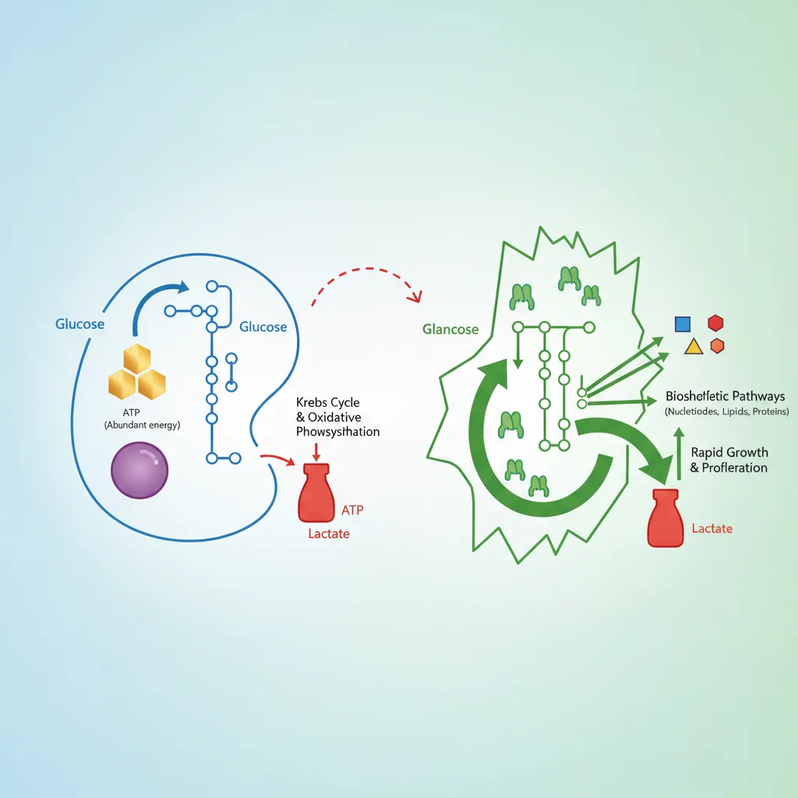
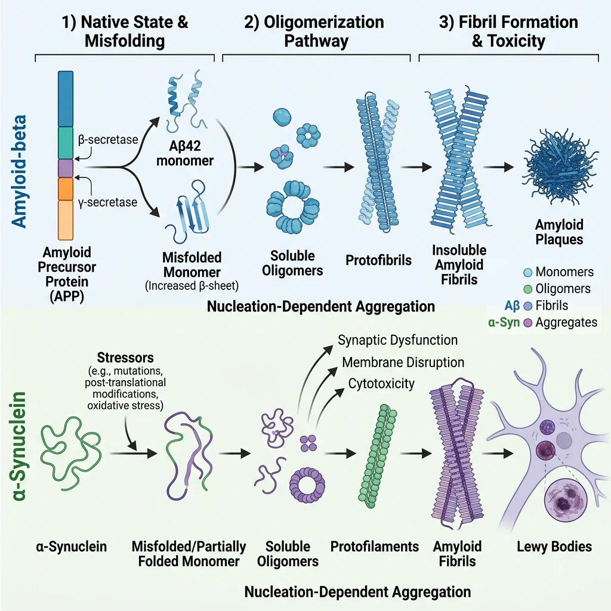
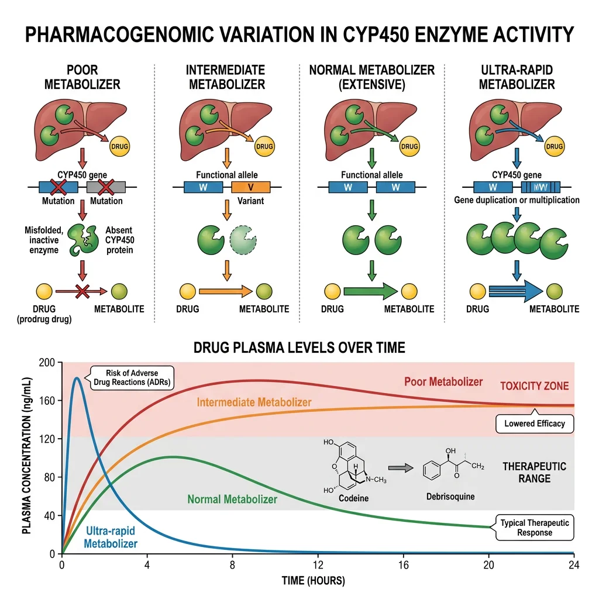

Biochemistry Mastery
Biological Chemistry Fundamentals
Atoms, bonds, functional groups, thermodynamicsWater, pH & Biological Buffers
Water polarity, pH, Henderson-Hasselbalch, blood buffersAmino Acids & Protein Structure
Amino acid classes, peptide bonds, protein foldingEnzymes & Catalysis
Kinetics, Michaelis-Menten, inhibition, regulationCarbohydrates & Lipids
Sugars, glycogen, fatty acids, cholesterol, membranesMetabolism & Bioenergetics
ATP, glycolysis, gluconeogenesis, redox carriersCitric Acid Cycle & Oxidative Phosphorylation
Acetyl-CoA, ETC, ATP synthase, oxygen dependenceSignal Transduction & Cell Communication
GPCRs, kinases, calcium, hormone cascadesNucleic Acids & Gene Expression
DNA, replication, transcription, translation, epigeneticsBrain & Nervous System Biochemistry
Neurotransmitters, ion gradients, myelin, neurodegenerationHeart & Muscle Biochemistry
Cardiac metabolism, actin-myosin, energy systemsLiver Biochemistry
Glucose homeostasis, detox, urea cycle, bileKidney Biochemistry & Acid-Base
pH regulation, ion transport, hormonal functionsEndocrine System Biochemistry
Hormone classes, signaling, glucose & stress controlDigestive System Biochemistry
Gastric acid, enzymes, bile, absorption, microbiomeImmune System Biochemistry
Antibodies, cytokines, complement, oxidative burstAdipose Tissue & Energy Balance
Triglycerides, lipolysis, leptin, obesityTissue-Specific Metabolism
Fed vs fasting, organ fuel selection, starvationMolecular Basis of Disease
Diabetes, cancer metabolism, neurodegenerationClinical Biochemistry & Diagnostics
Blood tests, liver/kidney markers, lipid panelsMolecular Disease Mechanisms Overview
Every disease, at its most fundamental level, is a biochemical disturbance — a disrupted enzyme, a misfolded protein, a dysregulated signalling pathway, or an uncontrolled metabolic process. From the single amino acid change in sickle cell disease to the complex metabolic reprogramming of cancer, understanding the molecular basis of disease connects biochemistry to clinical medicine and opens the door to rational drug design.

Categories of Molecular Disease
- Monogenic (Mendelian) disorders: Single gene mutations causing loss or gain of protein function — PKU, sickle cell, cystic fibrosis, Tay-Sachs. Follow simple inheritance patterns (autosomal dominant/recessive, X-linked)
- Polygenic/multifactorial diseases: Multiple genetic variants interact with environmental factors — diabetes, cardiovascular disease, cancer, obesity. Each variant contributes small risk; environment acts as trigger
- Somatic mutation diseases: Acquired mutations in somatic cells — cancer (oncogene activation + tumour suppressor loss), some haematological disorders
- Protein misfolding diseases (proteopathies): Proteins adopt abnormal conformations that aggregate — Alzheimer's (Aβ plaques), Parkinson's (α-synuclein Lewy bodies), prion diseases (PrPSc), systemic amyloidosis
- Metabolic diseases: Inborn errors of metabolism (enzyme deficiencies causing substrate accumulation or product deficiency) — glycogen storage diseases, lysosomal storage disorders, amino acid disorders
Molecular Pathology Principles
Molecular pathology connects genotype to phenotype through a chain of causation: DNA mutation → mRNA change → protein alteration → biochemical dysfunction → cellular pathology → organ dysfunction → clinical disease. Understanding each step enables intervention at multiple levels.
| Mutation Type | Molecular Effect | Biochemical Consequence | Disease Example |
|---|---|---|---|
| Missense | Single amino acid substitution | Altered protein function or stability | Sickle cell (Glu→Val in β-globin) |
| Nonsense | Premature stop codon | Truncated, non-functional protein | Duchenne muscular dystrophy |
| Frameshift | Insertion/deletion alters reading frame | Completely altered protein from mutation point | Tay-Sachs (4-bp insertion in HEXA) |
| Splice site | Exon skipping or intron retention | Missing or extra protein domains | Some forms of β-thalassaemia |
| Trinucleotide repeat | Expanded repeat tract (anticipation) | Toxic gain of function or gene silencing | Huntington's (CAG repeat in HTT) |
| Gain-of-function | Constitutively active or resistant protein | Unregulated pathway activation | Achondroplasia (constitutive FGFR3) |
Garrod's Insight — Inborn Errors of Metabolism
Sir Archibald Garrod (1908) was the first to propose that diseases could result from enzyme deficiencies — his "inborn errors of metabolism" concept, based on studying alkaptonuria (deficiency of homogentisic acid oxidase), was decades ahead of its time. Garrod recognised that "the splitting up of the benzene ring [is] the work of a special enzyme" and that the recessive inheritance pattern reflected a missing enzymatic step. This "one gene–one enzyme" concept (later formalised by Beadle and Tatum in 1941) remains the foundation of understanding metabolic disease: every enzyme in a metabolic pathway is a potential disease gene.
Diabetes Biochemistry
Diabetes mellitus — affecting over 500 million people worldwide — is the paradigmatic metabolic disease, illustrating how a single hormonal deficiency (insulin) cascades into multi-organ biochemical catastrophe. The two major types (Type 1 and Type 2) have fundamentally different aetiologies but converge on the same biochemical endpoint: inability to properly utilise glucose, leading to hyperglycaemia and its devastating complications.

Type 1 Diabetes
Type 1 — Autoimmune β-Cell Destruction
- Pathogenesis: Autoreactive T lymphocytes (CD8⁺ cytotoxic T cells) selectively destroy pancreatic β-cells in the islets of Langerhans. Autoantibodies against insulin, GAD65 (glutamic acid decarboxylase), IA-2 (islet antigen 2), and ZnT8 (zinc transporter) appear years before clinical onset
- Timeline: β-cell destruction occurs over months to years; clinical diabetes manifests when ~80–90% of β-cells are destroyed and remaining cells cannot maintain euglycaemia
- Genetic risk: Strongest association is with HLA-DR3/DR4 and HLA-DQ alleles on chromosome 6p21 (MHC Class II genes that determine antigen presentation to T cells). Concordance in identical twins is only ~50%, indicating environmental triggers are required
- Metabolic state: Complete insulin deficiency → unregulated lipolysis → massive FFA flux → hepatic ketogenesis → diabetic ketoacidosis (DKA): a life-threatening metabolic emergency with blood glucose >14 mM, ketones >10 mM, pH <7.3, and dehydration from osmotic diuresis
Type 2 Diabetes
Type 2 — Insulin Resistance + Progressive β-Cell Failure
Type 2 diabetes develops through a two-hit model: (1) insulin resistance in muscle, liver, and adipose tissue (requiring progressively more insulin to maintain normoglycaemia); followed by (2) β-cell decompensation when the pancreas can no longer produce enough insulin to overcome resistance. This process unfolds over decades:
- Years 1–10 (compensated): Insulin resistance develops (obesity, sedentary lifestyle) but β-cells compensate by secreting 2–3× more insulin → normal blood glucose (but hyperinsulinaemia)
- Years 10–20 (pre-diabetes): β-cells begin to fail (glucotoxicity, lipotoxicity, amyloid deposition) → impaired fasting glucose (5.6–6.9 mM) and impaired glucose tolerance (2h glucose 7.8–11.0 mM after OGTT)
- Clinical diabetes: Fasting glucose >7.0 mM or HbA1c >6.5% — β-cell function has declined to ~50% of normal by the time of diagnosis
Insulin Resistance
Molecular Mechanisms of Insulin Resistance
- Lipotoxicity pathway: Ectopic lipid accumulation (intramyocellular DAG in muscle, hepatic DAG in liver) activates novel PKC isoforms (PKCθ in muscle, PKCε in liver) that phosphorylate IRS-1 on serine residues (Ser307, Ser636) instead of normal tyrosine phosphorylation → disrupts PI3K/Akt signalling → reduced GLUT4 translocation in muscle, reduced glycogen synthesis, and continued hepatic glucose output
- Inflammatory pathway: Adipose macrophage infiltration → TNF-α and IL-6 → activation of JNK and IKKβ → serine phosphorylation of IRS-1 (same convergent mechanism as lipotoxicity)
- ER stress: Nutrient excess → unfolded protein response (UPR) → IRE1α/JNK activation → IRS-1 serine phosphorylation
- Glucotoxicity: Chronic hyperglycaemia → increased hexosamine pathway flux (GFAT → UDP-GlcNAc) → O-GlcNAcylation of Akt and other signalling proteins → impaired insulin signalling
Banting & Best — Discovery of Insulin
Frederick Banting and Charles Best at the University of Toronto performed one of medicine's most consequential experiments: they ligated the pancreatic ducts of dogs (causing acinar cell atrophy while preserving islets), extracted an "isletin" preparation, and injected it into diabetic dogs — restoring normal blood glucose. In January 1922, 14-year-old Leonard Thompson became the first human treated with insulin, transforming Type 1 diabetes from a death sentence to a manageable chronic disease. Banting received the Nobel Prize in 1923 — and shared his prize money with Best, who as a medical student had been overlooked by the Nobel committee. The biochemist James Collip purified the extract to make it safe for human use. Insulin's structure was later sequenced by Frederick Sanger (Nobel 1958, the first protein ever sequenced) and synthesised by recombinant DNA technology in 1978 (by Genentech — the first commercially important recombinant protein).
Cancer Metabolism
Cancer is fundamentally a disease of dysregulated cell growth, driven by mutations in genes controlling cell division, death, and metabolism. The metabolic reprogramming of cancer cells — their altered relationship with glucose, glutamine, and oxygen — provides both a window into tumour biology and therapeutic targets for treatment.

The Warburg Effect
Aerobic Glycolysis — Otto Warburg's Paradox
Otto Warburg (Nobel Prize 1931) observed that cancer cells consume glucose at extraordinarily high rates and ferment it to lactate even in the presence of adequate oxygen — a phenomenon called "aerobic glycolysis" or the Warburg effect. This is metabolically paradoxical: glycolysis produces only 2 ATP per glucose (vs ~30–32 ATP via oxidative phosphorylation), so why would rapidly dividing cells choose the less efficient pathway?
- Biosynthetic advantage: Cancer cells need building blocks (nucleotides, amino acids, lipids) more than ATP. Glycolytic intermediates are diverted into biosynthetic pathways: G6P → pentose phosphate pathway (ribose-5-phosphate for nucleotides + NADPH for lipogenesis); 3-phosphoglycerate → serine biosynthesis → one-carbon metabolism; pyruvate → alanine/oxaloacetate for amino acid synthesis
- Redox balance: High glycolytic flux maintains NAD⁺/NADH ratio (via LDH → lactate), ensuring glycolysis continues at high rates without mitochondrial bottleneck
- Microenvironment acidification: Lactate export creates an acidic extracellular environment (pH 6.5–7.0) that promotes invasion, suppresses immune surveillance, and selects for acid-resistant, aggressive clones
- Clinical application: PET-CT scanning with ¹⁸F-fluorodeoxyglucose (FDG-PET) exploits the Warburg effect — FDG is taken up by GLUT1 (upregulated in cancer), phosphorylated by hexokinase II (also upregulated), but cannot proceed through glycolysis → accumulates in tumour cells, visualised as "hot spots" on imaging
Oncogenes & Tumour Suppressors
The Accelerator and Brake Model
Cancer requires mutations in both oncogenes (accelerators — gain-of-function) and tumour suppressors (brakes — loss-of-function). Think of it as a car: an oncogene mutation is a jammed accelerator pedal, while a tumour suppressor loss is failed brakes. Either alone may not cause a crash, but together they create uncontrollable proliferation.
| Gene | Type | Normal Function | Metabolic Effect of Mutation | Cancer Type |
|---|---|---|---|---|
| RAS | Oncogene | GTPase in growth signalling | Locked in GTP-bound "ON" state → constitutive PI3K/Akt/mTOR → increased glycolysis + lipogenesis | Pancreatic (~95%), colorectal, lung |
| MYC | Oncogene | Transcription factor for cell growth | Upregulates GLUT1, HK2, LDHA (glycolysis) + glutaminase (glutaminolysis) | Burkitt lymphoma, many solid tumours |
| TP53 | Tumour suppressor | "Guardian of the genome" — apoptosis, DNA repair | Loss removes TIGAR (which suppresses glycolysis) and SCO2 (which promotes OXPHOS) → metabolic shift to Warburg phenotype | ~50% of all cancers |
| HIF-1α | Oncogene (context) | Hypoxia response transcription factor | Stabilised even in normoxia (pseudohypoxia) → upregulates all glycolytic enzymes + VEGF (angiogenesis) | Renal cell carcinoma (VHL loss → HIF-1α stabilisation) |
| IDH1/2 | Oncogene (neomorphic) | Isocitrate → α-ketoglutarate (TCA cycle) | Gain-of-function mutation → produces D-2-hydroxyglutarate (D-2HG), an "oncometabolite" that inhibits α-KG-dependent dioxygenases (TET2, JHDMs) → epigenetic dysregulation | Glioma (~80%), AML (~20%) |
Targeting Cancer Metabolism — Drug Development
Understanding cancer's metabolic dependencies has enabled targeted therapies: Ivosidenib (IDH1 inhibitor) and enasidenib (IDH2 inhibitor) block D-2HG production in IDH-mutant AML and glioma, allowing epigenetic reprogramming back to normal differentiation. Metformin (diabetes drug) is being investigated as a cancer preventive — it activates AMPK, which phosphorylates and inactivates ACC (blocking lipogenesis) and suppresses mTOR (reducing protein synthesis/cell growth). In clinical trials, diabetic patients on metformin show lower cancer incidence, although whether metformin works through AMPK, mitochondrial Complex I inhibition, or immune mechanisms remains debated.
Neurodegenerative Diseases
Neurodegenerative diseases share a common biochemical theme: protein misfolding and aggregation. Normal proteins adopt abnormal conformations that resist degradation, accumulate as toxic oligomers or fibrils, and ultimately kill neurons. Each disease involves a different protein but similar aggregation biophysics — suggesting common therapeutic targets.

Alzheimer's Disease & Amyloid Pathology
The Amyloid Cascade Hypothesis
- APP processing: Amyloid Precursor Protein (APP, chromosome 21) is normally cleaved by α-secretase (non-amyloidogenic pathway). In Alzheimer's, sequential cleavage by β-secretase (BACE1) then γ-secretase (presenilin 1/2 complex) produces Aβ42 — a 42-amino acid peptide that is hydrophobic and aggregation-prone
- Aggregation cascade: Aβ42 monomers → soluble oligomers (the most neurotoxic species) → protofibrils → insoluble amyloid fibrils → extracellular senile plaques. The oligomers disrupt synaptic function, impair long-term potentiation (LTP), and activate microglial neuroinflammation
- Tau pathology: Aβ toxicity triggers hyperphosphorylation of tau protein (by GSK-3β and CDK5 kinases), causing tau to dissociate from microtubules → axonal transport collapse → neurofibrillary tangles (NFTs) that correlate better with cognitive decline than amyloid plaques
- Genetic evidence: Down syndrome (trisomy 21 → triple dose of APP) → virtually universal Alzheimer's pathology by age 40; mutations in PSEN1 (presenilin 1) cause aggressive early-onset familial AD; APOE ε4 allele (most important genetic risk factor for late-onset AD) impairs Aβ clearance
Lecanemab — First Anti-Amyloid Drug to Show Clinical Benefit
After decades of failed anti-amyloid trials, lecanemab (Leqembi, FDA-approved 2023) became the first drug to demonstrate statistically significant slowing of cognitive decline by targeting amyloid. Lecanemab is a humanised monoclonal antibody that selectively binds Aβ protofibrils (the intermediate-sized aggregates thought to be most toxic) and promotes their clearance via microglial phagocytosis. The CLARITY-AD trial showed 27% slowing of cognitive decline over 18 months in early AD — modest but meaningful, validating that reducing amyloid burden can translate to clinical benefit. Side effects include ARIA (amyloid-related imaging abnormalities — brain swelling and microbleeds), particularly in APOE ε4 carriers. This represents the first disease-modifying therapy for AD and has re-energised the field after years of scepticism about the amyloid hypothesis.
Parkinson's Disease & Alpha-Synuclein
Dopaminergic Neurodegeneration
- Pathology: Selective loss of dopaminergic neurons in the substantia nigra pars compacta (SNpc), leading to dopamine depletion in the striatum → motor symptoms (tremor, rigidity, bradykinesia, postural instability). By the time symptoms appear, ~60–80% of SNpc neurons are already lost
- α-Synuclein: This 140-amino acid protein normally associates with presynaptic vesicle membranes and may regulate vesicle dynamics. In PD, α-synuclein misfolds into β-sheet-rich oligomers and fibrils that aggregate into Lewy bodies (intracellular inclusions) — the neuropathological hallmark of PD
- Mechanisms of toxicity: (1) Mitochondrial dysfunction — α-synuclein aggregates bind mitochondrial membranes, inhibit Complex I, increase ROS; (2) proteasome/autophagy impairment — aggregates clog the ubiquitin-proteasome system and impair autophagy; (3) prion-like spreading — misfolded α-synuclein can be transmitted cell-to-cell, seeding misfolding in neighbouring neurons (Braak staging — pathology spreads from brainstem → midbrain → cortex)
- Genetic links: SNCA (α-synuclein) duplications/triplications → dose-dependent PD; LRRK2 (leucine-rich repeat kinase 2) mutations → most common genetic cause of familial PD; PINK1 and Parkin mutations → impaired mitophagy (selective autophagy of damaged mitochondria)
Genetic Metabolic Disorders
Single-gene defects can devastate metabolism by knocking out one enzyme or structural protein. These monogenic metabolic diseases follow Mendelian inheritance (autosomal recessive, autosomal dominant, or X-linked) and collectively affect ~1 in 500 births. They illustrate fundamental biochemistry — each mutation teaches us how a specific pathway works by showing what happens when it breaks.
Phenylketonuria (PKU)
The Classic Inborn Error
- Enzyme defect: Mutations in phenylalanine hydroxylase (PAH) — the hepatic enzyme that hydroxylates phenylalanine → tyrosine using tetrahydrobiopterin (BH4) as cofactor. Over 1,100 PAH mutations catalogued (missense most common). Autosomal recessive, incidence ~1 in 10,000–15,000
- Biochemical consequences: Phenylalanine accumulates in blood (>1,200 μmol/L vs normal 60–120 μmol/L) and is diverted to normally minor pathways → phenylpyruvate (detected in urine — "phenylketonuria"), phenyllactate, phenylacetate (musty odour). Tyrosine becomes essential (no endogenous synthesis → reduced melanin → fair skin/hair)
- Neurological damage: Excess phenylalanine in the brain competitively inhibits transport of other large neutral amino acids (tryptophan, tyrosine) across the blood-brain barrier → impaired serotonin and dopamine synthesis → intellectual disability, seizures, behavioural problems if untreated
- Treatment: Phenylalanine-restricted diet (lifelong) supplemented with medical formula providing amino acids and micronutrients; sapropterin (Kuvan) for BH4-responsive mutations (~25–50% of patients); pegvaliase (PEGylated phenylalanine ammonia lyase) — enzyme substitution therapy for adults who cannot maintain dietary control
Newborn Screening — The Guthrie Test
Robert Guthrie's 1963 bacterial inhibition assay enabled mass newborn screening for PKU — one of the great public health success stories. A drop of blood on filter paper (the "Guthrie card") is tested for elevated phenylalanine. Modern tandem mass spectrometry (MS/MS) newborn screening simultaneously detects 40+ metabolic disorders from a single blood spot. PKU screening demonstrates that early detection + dietary intervention can completely prevent intellectual disability, validating the concept of presymptomatic treatment.
Sickle Cell Disease
A Single Amino Acid Change with Global Impact
- Molecular defect: Point mutation in the HBB gene (chromosome 11) — Glu6Val (GAG → GTG). This single amino acid substitution on the β-globin chain creates a hydrophobic patch on the surface of deoxyhaemoglobin
- Polymerisation: When HbS (sickle haemoglobin) releases O₂, the Val6 residue inserts into a hydrophobic pocket on an adjacent HbS molecule → long fibrous polymers that distort RBCs into rigid sickle shapes → vaso-occlusion → pain crises, organ damage, stroke, chronic haemolytic anaemia
- Heterozygote advantage: Carriers (HbAS — sickle cell trait) have ~40% HbS and are protected against severe Plasmodium falciparum malaria. The sickle trait impairs parasite growth inside RBCs and promotes splenic clearance of parasitised cells — classic example of balanced polymorphism maintaining a deleterious allele in malaria-endemic regions
- Treatments: Hydroxyurea (increases fetal haemoglobin HbF, which inhibits HbS polymerisation), L-glutamine, voxelotor (stabilises oxy-HbS), crizanlizumab (anti-P-selectin, reduces vaso-occlusion). Gene therapy: Casgevy (CRISPR/Cas9 editing of BCL11A erythroid enhancer to reactivate HbF) — FDA-approved December 2023, the first CRISPR-based gene therapy approved for any disease
Tay-Sachs Disease
Lysosomal Storage — When Degradation Fails
- Enzyme defect: Deficiency of hexosaminidase A (Hex A) — a lysosomal hydrolase composed of α and β subunits. Mutations in the HEXA gene (chromosome 15) eliminate α subunit function → Hex A cannot cleave the terminal N-acetylgalactosamine from GM2 ganglioside
- Ganglioside accumulation: GM2 ganglioside progressively accumulates in neuronal lysosomes → massive lysosomal swelling → neuronal death. Neurons are particularly vulnerable because gangliosides are abundant in neuronal membranes and turnover is high
- Clinical course: Infantile form (most common) — normal development for 3–6 months, then progressive neurodegeneration: developmental regression, cherry-red spot on retinal exam (lipid-laden ganglion cells surrounding the fovea), seizures, blindness, death by age 4–5. Late-onset forms with residual enzyme activity present with progressive motor neuron disease
- Population genetics: Carrier frequency ~1 in 30 in Ashkenazi Jewish populations (vs ~1 in 300 general), likely due to founder effect and/or genetic drift. Carrier screening programmes since the 1970s have reduced incidence by >90% in screened populations — another triumph of biochemical genetics
Inborn Errors of Metabolism
Sir Archibald Garrod's concept of inborn errors of metabolism (1908) — that inherited enzyme deficiencies block specific metabolic pathways — has expanded into a vast field encompassing over 1,000 recognised disorders. These conditions illustrate every major biochemical pathway and share diagnostic and therapeutic principles.
| Category | Example Diseases | Defective Pathway | Key Biochemistry | Treatment Approach |
|---|---|---|---|---|
| Amino Acid Disorders | PKU, Maple Syrup Urine Disease, Homocystinuria | Amino acid catabolism | Substrate accumulation → toxic metabolites | Dietary restriction, cofactor supplementation |
| Organic Acidemias | Methylmalonic Acidemia, Propionic Acidemia | Branched-chain AA / odd-chain FA catabolism | Accumulation of CoA-esters → metabolic acidosis, hyperammonaemia | Protein restriction, carnitine, B12 (if responsive) |
| Urea Cycle Defects | OTC Deficiency, Citrullinaemia, Argininosuccinic Aciduria | Urea cycle | Hyperammonaemia → cerebral oedema, encephalopathy | Protein restriction, nitrogen scavengers (sodium benzoate, phenylbutyrate), liver transplant |
| Fatty Acid Oxidation | MCADD, VLCADD, CPT II Deficiency | Mitochondrial β-oxidation | Hypoketotic hypoglycaemia, cardiomyopathy | Avoid fasting, MCT oil, carnitine |
| Glycogen Storage | Von Gierke (I), Pompe (II), McArdle (V) | Glycogen synthesis/breakdown | Hepatomegaly, hypoglycaemia, or exercise intolerance | Cornstarch, enzyme replacement (Pompe) |
| Lysosomal Storage | Gaucher, Fabry, Tay-Sachs, Niemann-Pick | Lysosomal hydrolases | Substrate accumulation in lysosomes → organomegaly, neurodegeneration | Enzyme replacement therapy, substrate reduction, chaperone therapy |
| Mitochondrial Disease | MELAS, MERRF, Leigh Syndrome | Oxidative phosphorylation | Lactic acidosis, myopathy, encephalopathy (maternal inheritance for mtDNA mutations) | CoQ10, riboflavin, supportive — limited disease-modifying options |
Diagnostic Approach to Inborn Errors
The classic diagnostic workup follows a logical biochemical hierarchy: (1) Newborn screening — tandem MS/MS identifies elevated metabolites presymptomatically; (2) Basic metabolic panel — blood glucose, lactate, ammonia, arterial blood gas (metabolic acidosis with elevated anion gap); (3) Specialised metabolites — plasma amino acids, urine organic acids, acylcarnitine profile; (4) Enzyme assay — measure specific enzyme activity in leukocytes or fibroblasts; (5) Molecular genetics — gene sequencing confirms the diagnosis and enables carrier testing. The pattern of metabolites often points directly to the blocked step: accumulation of the substrate and deficiency of the product.
Pharmacogenomics & Precision Medicine
Pharmacogenomics studies how genetic variation affects drug response — from absorption and metabolism to efficacy and toxicity. The same dose of a drug can be therapeutic in one patient, ineffective in another, and lethal in a third, largely due to inherited differences in drug-metabolising enzymes, transporters, and drug targets.

Key Pharmacogenomic Principles
- Cytochrome P450 enzymes: The CYP superfamily (especially CYP2D6, CYP2C19, CYP3A4, CYP2C9) metabolises ~75% of all drugs. Genetic polymorphisms create metaboliser phenotypes: poor metabolisers (PM — no functional alleles, drug accumulates → toxicity), intermediate (IM), extensive/normal (EM/NM), and ultra-rapid metabolisers (UM — gene duplications, drug cleared too quickly → inefficacy)
- CYP2D6 example: Codeine is a prodrug converted to morphine by CYP2D6. Poor metabolisers get no pain relief; ultra-rapid metabolisers (especially common in North/East Africa, ~30%) can produce dangerously high morphine levels — fatalities in breastfed infants of UM mothers led to FDA warnings
- Warfarin sensitivity: CYP2C9 variants (CYP2C9*2, *3) reduce warfarin metabolism → higher drug levels → bleeding risk. VKORC1 variants alter the drug target sensitivity. Together, CYP2C9 + VKORC1 genotype explains ~40% of warfarin dose variability
- HLA-linked drug reactions: HLA-B*57:01 → abacavir hypersensitivity (HIV drug), HLA-B*15:02 → carbamazepine/Stevens-Johnson syndrome (especially in Southeast Asian populations). Pre-prescription HLA testing is now standard of care
| Gene | Drug(s) Affected | Clinical Impact | Action |
|---|---|---|---|
| CYP2D6 | Codeine, tamoxifen, tramadol | PM: toxicity / no activation; UM: excessive activation | Alternative analgesic; dose adjustment |
| CYP2C19 | Clopidogrel, omeprazole, voriconazole | PM: clopidogrel not activated → stent thrombosis risk | Use prasugrel or ticagrelor instead |
| TPMT / NUDT15 | Azathioprine, 6-mercaptopurine | Deficiency → severe myelosuppression | Reduce dose 50–90% or use alternative |
| DPYD | 5-fluorouracil, capecitabine | DPD deficiency → life-threatening toxicity | Pre-treatment testing now mandatory (EU) |
| UGT1A1 | Irinotecan | UGT1A1*28 → severe neutropenia/diarrhoea | Reduce starting dose |
| HLA-B*57:01 | Abacavir | Hypersensitivity reaction (fever, rash, organ damage) | Mandatory pre-prescription screening |
The Precision Medicine Initiative & Clinical Implementation
The Precision Medicine Initiative (launched 2015, now "All of Us" programme) aims to enrol 1 million+ participants with genomic, environmental, and lifestyle data to enable individualised treatment. Clinical implementation is accelerating: the Clinical Pharmacogenetics Implementation Consortium (CPIC) has published evidence-based guidelines for 24+ gene-drug pairs, and major medical centres now offer pre-emptive pharmacogenomic panels — genotyping patients for multiple pharmacogenes before they ever need the drugs. The IGNITE network demonstrated that integrating pharmacogenomic results into electronic health records with clinical decision support alerts reduces adverse drug events and improves outcomes. Challenges remain: cost-effectiveness, equitable access across populations, and the need for education — most physicians still receive minimal pharmacogenomics training despite its proven clinical value.
Exercises & Review Questions
Exercise 1: Explain why a single Glu6Val mutation in β-globin causes sickle cell disease only under low oxygen conditions.
Answer: The Val6 residue creates a hydrophobic patch on the surface of the β-globin subunit that is only exposed when haemoglobin is in the deoxygenated (T-state) conformation. In oxy-HbS, conformational differences keep the Val6 patch buried/inaccessible. When HbS releases oxygen and transitions to the T-state, the Val6 hydrophobic patch on one molecule inserts into a complementary hydrophobic pocket on an adjacent HbS molecule. This complementary fit enables polymerisation — HbS molecules stack end-to-end into long rigid fibres. These fibres distort the RBC into a sickle shape. Oxy-HbS does not polymerise because the docking site geometry requires the T-state conformation — this is why sickling is triggered by hypoxia, dehydration, acidosis, and other conditions that promote deoxygenation.
Exercise 2: Why does the Warburg effect (aerobic glycolysis) benefit cancer cells despite being less ATP-efficient than oxidative phosphorylation?
Answer: Cancer cells prioritise biosynthesis over energy efficiency. Rapid glycolysis generates intermediates that feed anabolic pathways: glucose-6-phosphate enters the pentose phosphate pathway (producing NADPH for reductive biosynthesis and ribose-5-phosphate for nucleotide synthesis); 3-phosphoglycerate feeds serine/glycine synthesis; pyruvate/citrate provide acetyl-CoA for lipid synthesis. Additionally, the glycolytic rate is so high that even at 2 ATP/glucose, cancer cells can produce ATP faster than oxidative phosphorylation. Lactate export acidifies the tumour microenvironment, which suppresses immune surveillance and promotes invasion. The Warburg effect is essentially a growth-optimised metabolic programme rather than an energy-optimised one.
Exercise 3: A patient who is a CYP2D6 ultra-rapid metaboliser is prescribed codeine for pain relief. What is the clinical concern?
Answer: Codeine is a prodrug that requires CYP2D6-mediated O-demethylation to produce the active analgesic morphine. In ultra-rapid metabolisers (multiple functional CYP2D6 gene copies), codeine is converted to morphine at a much faster rate and to a greater extent than normal. This can produce dangerously high plasma morphine levels — causing respiratory depression, excessive sedation, and potentially death. This is especially dangerous in children and breastfeeding mothers (morphine passes into breast milk). The clinical action is to avoid codeine entirely in CYP2D6 UMs and prescribe an alternative analgesic that does not depend on CYP2D6 activation (e.g., morphine directly at appropriate doses, or non-opioid alternatives).
Exercise 4: Compare the molecular mechanisms of neurodegeneration in Alzheimer's disease and Parkinson's disease.
Answer: Both diseases involve protein misfolding and aggregation, but with different proteins and brain regions: Alzheimer's — extracellular Aβ42 amyloid plaques (from APP processing by β/γ-secretase) plus intracellular tau neurofibrillary tangles (hyperphosphorylated tau), primarily affecting hippocampus and cortex → memory/cognitive decline. Parkinson's — intracellular α-synuclein aggregates forming Lewy bodies, primarily affecting dopaminergic neurons in the substantia nigra → motor symptoms. Shared features include: (1) toxic oligomers more harmful than mature fibrils, (2) prion-like cell-to-cell spreading, (3) mitochondrial dysfunction and oxidative stress, (4) neuroinflammation via microglial activation, (5) impaired protein clearance (proteasome/autophagy). Key differences: AD primarily affects cognition (cortical), PD primarily affects movement (subcortical dopaminergic); AD has extracellular pathology (plaques), PD is purely intracellular (Lewy bodies).
Exercise 5: A newborn screening test shows elevated phenylalanine. Outline the biochemical basis and the treatment strategy.
Answer: Elevated phenylalanine on newborn screening suggests phenylketonuria (PKU) — deficiency of phenylalanine hydroxylase (PAH), which converts phenylalanine → tyrosine using BH4 cofactor. Without functional PAH, phenylalanine accumulates and is diverted to phenylpyruvate, phenyllactate, and phenylacetate (toxic metabolites). Excess phenylalanine in the brain competitively inhibits transport of other large neutral amino acids (tryptophan, tyrosine) across the blood-brain barrier, impairing neurotransmitter synthesis → intellectual disability if untreated. Treatment: (1) Confirm with repeat phenylalanine level and BH4 loading test (to identify BH4-responsive variants); (2) Immediate phenylalanine-restricted diet with medical formula providing essential amino acids; (3) Monitor blood phenylalanine levels (target 120–360 μmol/L); (4) Consider sapropterin (Kuvan) if BH4-responsive; (5) Lifelong dietary management with regular metabolic monitoring. Early treatment (within first 2 weeks of life) prevents intellectual disability entirely.
Disease Biochemistry Worksheet
Molecular Disease Study Guide
Organise your understanding of molecular disease mechanisms. Download as Word, Excel, or PDF.
Conclusion & Next Steps
The molecular basis of disease reveals how biochemical principles underpin every major category of human illness. From the single amino acid change in sickle cell disease to the complex metabolic reprogramming of cancer, from the protein misfolding cascades of neurodegeneration to the enzyme deficiencies of inborn errors — each disease teaches us about normal biochemistry by showing what happens when it goes wrong. Pharmacogenomics is now translating this molecular understanding into personalised treatment, moving medicine from one-size-fits-all dosing to genotype-guided precision therapy.